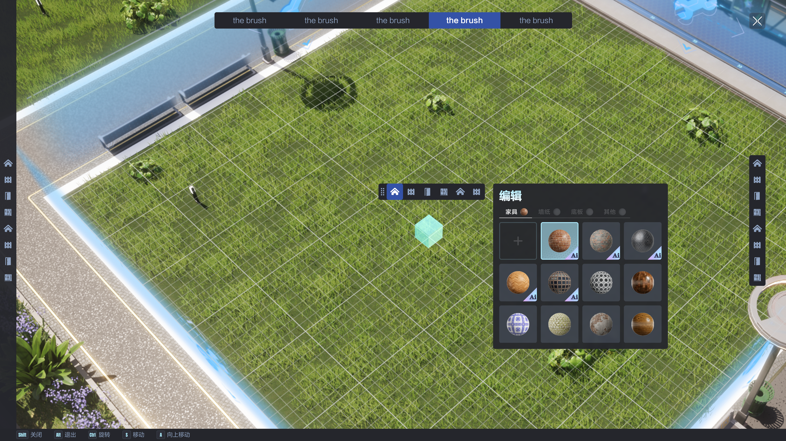
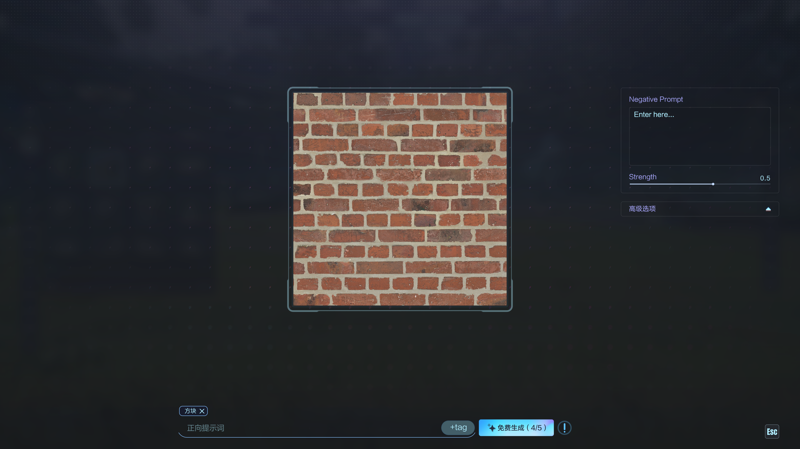
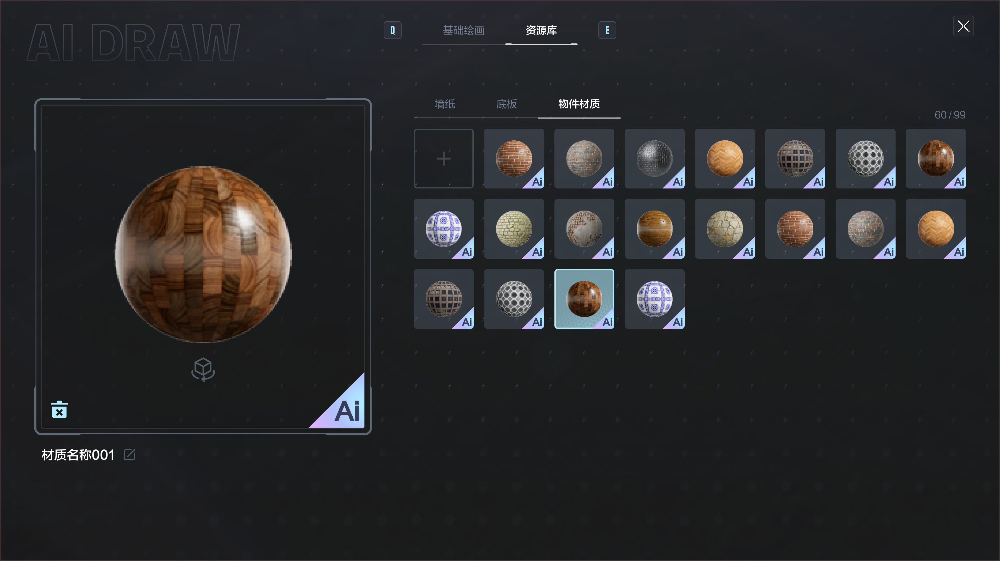
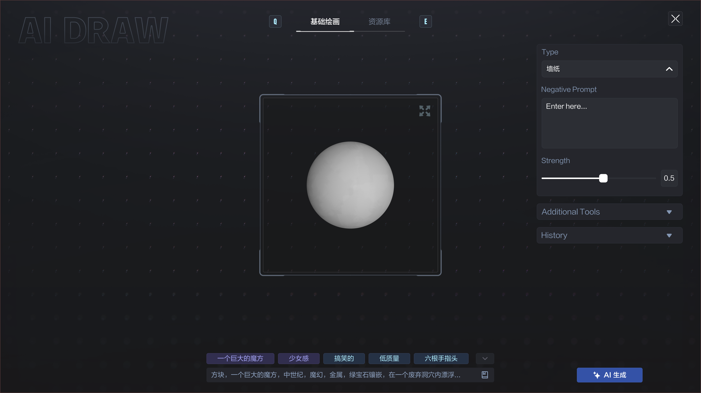
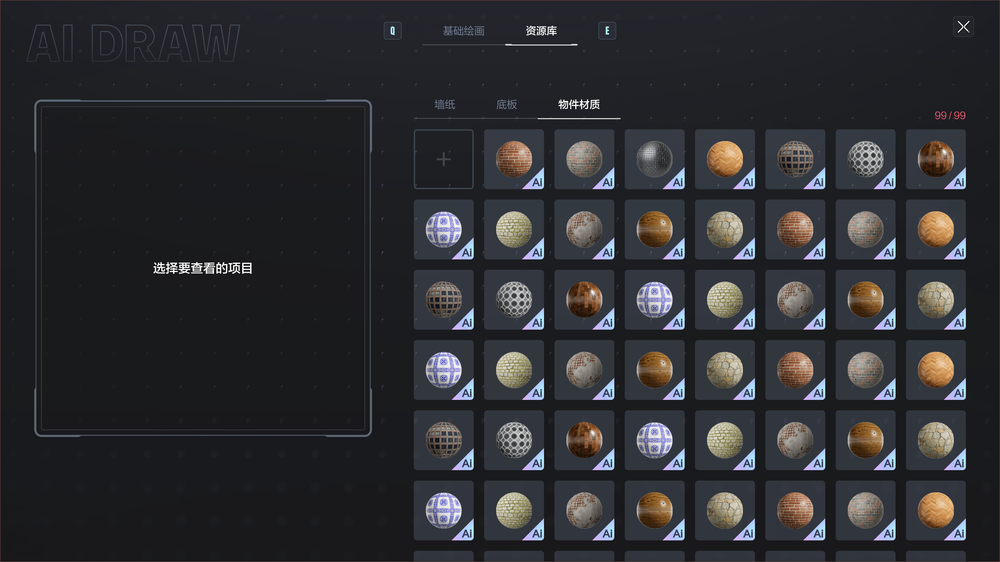
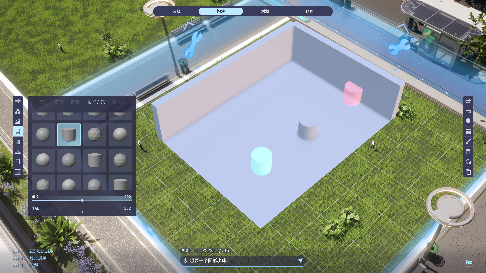

Edit the object, not a menu
I designed drag-and-drop furniture placement with direct on-object editing: recolour a piece, paint it directly, or reshape it in place. The controls live on the thing you are changing, not buried in a settings panel.
Players can extend and adjust walls too, changing length and height, so the room itself is editable, not just its contents. And AI generation is built in, letting users create new patterns and textures for furniture on demand.
// Drag-and-drop placement. Furniture positioned directly in the scene.
// Direct painting. Recolour and paint a piece on the object itself.
// Reshaping the room. Walls extend and adjust in length and height.
// AI generation. New patterns and textures created on demand.
Finding where the controls live
I prototyped multiple layouts to find where controls should sit, including a horizontal control strip anchored to the bottom of the screen for thumb reach. On a small touchscreen, control placement is the difference between effortless and awkward.
Then I ran hands-on demonstrations to validate the interaction model with real touch input before committing, feeling the reach and friction directly rather than assuming it from a static mockup.
// Bottom control strip. Horizontal layout anchored for thumb reach.
// Hands-on demo. The model tested with real touch input.
Tap the couch to see every couch
I explored a visual category system where users tap an element in a sample room, the couch in a living room scene, say, to view every option in that category. The room becomes the menu.
This replaced flat menu lists with a spatial, recognisable entry point that matches how people actually think about a room. You do not scroll a list looking for "seating"; you point at the seat.
// Visual category browse. Tap an object in the scene to see every option in its category.
Does touch-first hold up with a mouse?
I explored a PC version with a larger canvas, where walls could be adjusted and dragged directly onto the land. The extra space changes what the editor can do, and raises the question of whether the model still fits.
This tested whether the touch-first interaction model translated to a mouse-driven, higher-precision environment, or whether precision input needed a different set of affordances.
// PC canvas. Walls adjusted and dragged directly onto the land.
Bringing it together
The explorations came together into a polished final version, including the AI tool for generating custom patterns and textures, and an AI library where every created pattern and texture is saved and reused. What you generate once becomes part of your palette.






Effortless, and it scaled
Deep spatial editing made to feel effortless on a small touchscreen through direct manipulation
Controls placed by prototyping and real hands-on testing, not assumption
A spatial browse model that matches how people think about a room, replacing menus-first navigation
Interaction model carried from mobile to a larger PC canvas, with AI-generated textures saved to a reusable library